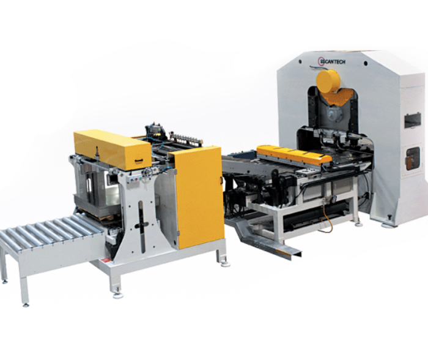
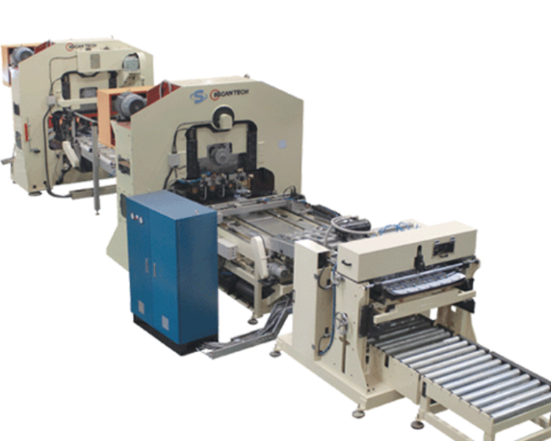
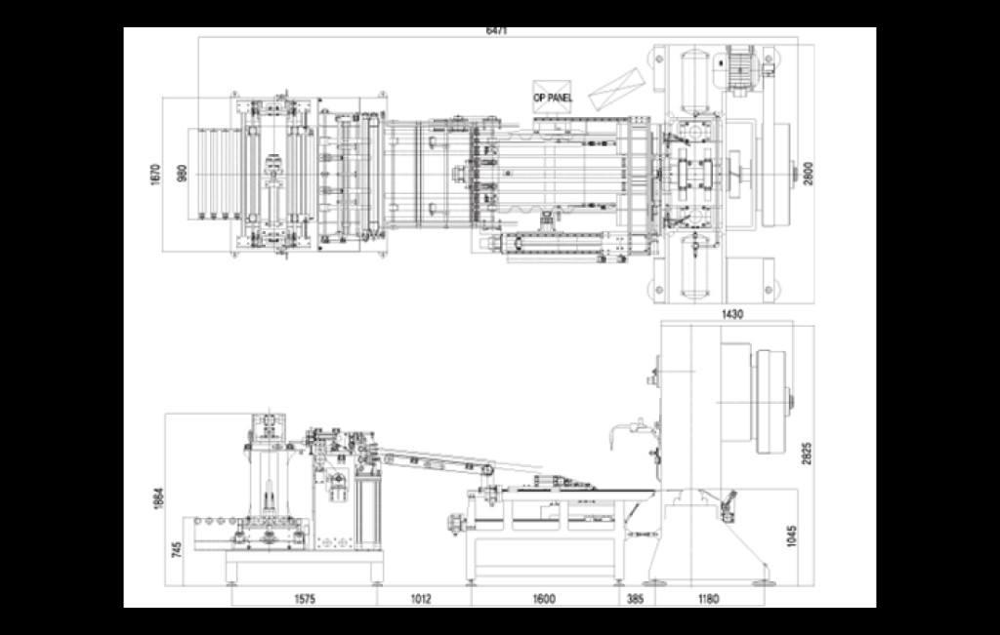
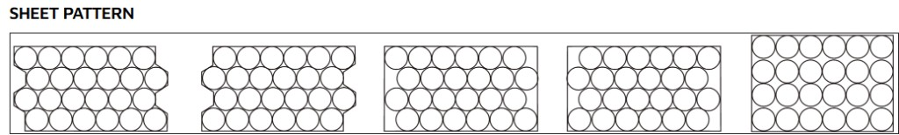
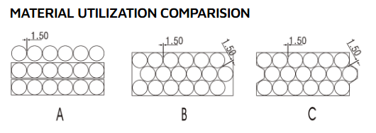

PRODUCT · TUNA 2PCS BODY
참치캔 바디
CNC 시트 피더 프레스와 DRD 2피스 캔 시트 피더 프레스 라인으로 참치캔 2피스 바디 생산 공정을 구성합니다.


CNC SHEET FEEDER PRESS
CNC 시트 피더 방식으로 원재료를 정밀 공급·성형하는 프레스 설비입니다. 지그재그 네스팅과 스크롤 시트 가공으로 소재 활용률을 극대화합니다.
LAYOUT

SHEET PATTERN

MATERIAL UTILIZATION

| Type | Utilizable Area (cm²) | Sheet Area (cm²) | Utilizable (%) |
|---|---|---|---|
| A | 7574.88 | 10592.79 | 71.5% |
| B | 7574.88 | 9156.75 | 82.7% |
| C | 7574.88 | 8790.50 | 86.1% |
SPECIFICATIONS
| Specification | 30TON | 60TON | 80TF | 110TF |
|---|---|---|---|---|
| Stroke Per Min | 110 spm | 110 spm | 80 spm | 110 spm |
| Die Height | 360mm | 390mm | 400mm | 380mm |
| Open Height | 480mm | 510mm | 460mm | 520mm |
| Slide Stroke Length | 130mm | 140mm | 600mm | 140mm |
| Die Height Adjust | 10mm | 20mm | 20mm | 35mm |
| Slide Area | 900 × 200mm | 900 × 250mm | 1500 × 300mm | 960 × 450mm |
| Bed Area | 900 × 200mm | 1200 × 420mm | 1600 × 400mm | 1200 × 560mm |
| Main Motor | 7.5kw × 6p | 11kw × 6p | 18.5kw × 4p | 22kw × 4p |
| Slider Adjust Motor | Hand Type | 0.75kw × 4p | 0.75kw × 4p | 0.75kw × 4p |
| Compressed Air | 10kg/cm² | 10kg/cm² | 10kg/cm² | 10kg/cm² |
| Air Consumption | 350 ℓ/min | 350 ℓ/min | 350 ℓ/min | 350 ℓ/min |
| Oil Tank Volume | 50 ℓ | 80 ℓ | 100 ℓ | 270 ℓ |
| Floor Space | W2600 × D1140 | W2600 × D1190 | W2600 × D1240 | W2350 × D1200 |
| Height Over All | 2600mm | 2700mm | 2800mm | 2825mm |
| Gross Weight | Approx. 8000kg | Approx. 10000kg | Approx. 12000kg | Approx. 14000kg |
FEATURES
PROCESS & SPEC